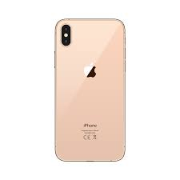

<!doctype html>
<html>

<head>
  <title>컴퓨터 기술 소개</title>
  <meta charset="utf-8">
  <style>
    body {background-color : aliceblue;}
    h1 {color : brown; text-align: center;}
    hr {border: 1px;}
    p{border-radius : 1px; border-style: dotted;}
    h2{color:blue;}
    footer{background-color: orange;}
</head>

<body>
  <audio src="YouWho.mp3" controls autoplay loop>
  </audio>
  <header>
    <h1>스마트폰</h1>
    <p>
      스마트폰은 컴퓨터를 결합한 무선 휴대전화기이다. pc에서 실행되는 운영체제보다 작게 만든 모바일 운영체제를 탑재하여 인터넷 검색, 전자우편, 간단한 문서 편집, 카메라, 오디오 및 비디오 재생 등 pc의
      기능을 거의 모두 갖추고 있다.
    </p>
  </header>
  <hr>
  <nav>
    <h2>목차</h2>
    
      <li><a href="#history">역사</a>
      <li><a href="#android">안드로이드폰</a>
      <li><a href="#iphone">아이폰</a>
      <li><a href="#sample">샘플</a>
    </ul> 
  </nav>
  <section>
    <article>
      <a href="https://ko.wikipedia.org/wiki/%EC%8A%A4%EB%A7%88%ED%8A%B8%ED%8F%B0#%EC%97%AD%EC%82%AC" target="_blank">
        <h2 id="history">역사</h2>
      </a>최초의 스마트폰은 IBM 사이먼이다. IBM사가 1992년에 설계하여 그 해에 미국 네바다 주의 라스베이거스에서 열린 컴댁스에서 컨셉 제품으로 전시되었다.
    </article>

    <article>
      <a href="https://ko.wikipedia.org/wiki/%EC%95%88%EB%93%9C%EB%A1%9C%EC%9D%B4%EB%93%9C_(%EC%9A%B4%EC%98%81_%EC%B2%B4%EC%A0%9C)"
        target="_blank">
        <h2 id="android">안드로이드폰</h2>
      </a>
      <p>안드로이드(영어: Android)는 휴대 전화를 비롯한 휴대용 장치를 위한 운영 체제와 미들웨어, 사용자 인터페이스 그리고 표준 응용 프로그램(웹 브라우저, 이메일 클라이언트, 단문 메시지
        서비스(SMS), MMS 등을 포함하고 있는 소프트웨어 스택이자 모바일 운영 체제이다. </p>
    </article>

    <article>
      <a href="https://ko.wikipedia.org/wiki/%EC%95%84%EC%9D%B4%ED%8F%B0" target="_blank">
        <h2 id="iphone">아이폰</h2>
      </a>
      <p>아이폰(영어: iPhone)은 미국 애플이 디자인하고 마케팅한 터치스크린 기반 휴대 전화 계열이다. 애플의 iOS 모바일 운영 체제를 사용한다. 1세대 아이폰은 애플의 공동 창립자 스티브 잡스가
        2007년 1월 9일 발표하였고 제품은 2007년 6월 29일 출시되었다.</p>
    </article>

    <article>
      <h2 id="sample">샘플</h2>
      <table>
        <caption>스마트폰 샘플</caption>
        <tbody>
          <tr>
            <td></td>
            <td></td>
            <td></td>
          </tr>
        </tbody>
      </table>
    </article>
  </section>
  <footer id="round1">
    <a href="survey3.html" name="survey" target="_blank">설문조사</a>
    <p>Copyright 2017 by Kitae</p>
  </footer>
</body>

</html>